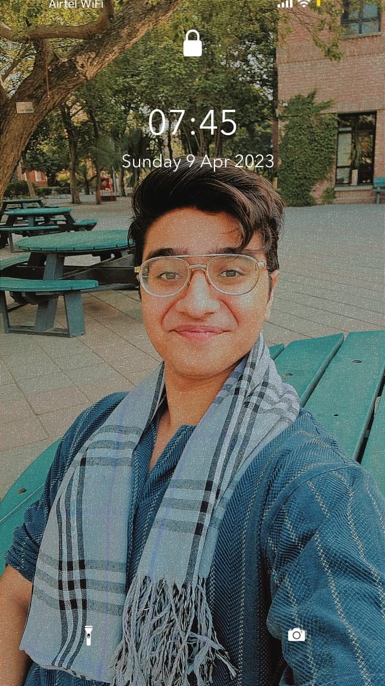

Omar Ibne Sajjad's Resume

Summary/Objective Statement
A slacker with a tenacity for speaking, I love public speaking and debates.
Not very fond of hard work, but once I decide to start working on something,
it's rare that I back off. In love with my country, Pakistan.
Education
- Earlier education in a variety of Army Public Schools(APS).
- Did my Matriculation from DHA APS:
- Got 93 percent in my matriculation examination.
- Did my FSC from Cadet College Hasanabdal:
- Got 95+ percent in my FSC examination.
- Currently doing my bachelors in Science(BSC) from Lahore University of Management Sciences(LUMS).
Work Experience
- Served as Assistant Committee Director at LUMUN
- Served as Chair of the United Nations Development Programme at LUMUN
- Part of the LUMUN team to HNMUN
- Currently completing a web development course with Dr Angela Yu at Udemy.
Skills
- Excellent Public speaking skills practiced at highest levels of Model United Nations(MUNs).
- Knows programming in C++. Studied Data structures.
- Proficient in HTML and CSS.
Awards and Certificates
- Certificate for Chairing LUMUN.
- Completed Angela Yu's Web Development Bootcamp at Udemy.
Other Information
Contact me
My Hobbies